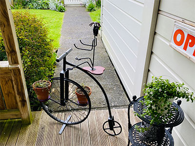

Gardenly
With an indoor garden, you can grow fresh plants, fruits, and herbs all year round.
Gardenly is an online marketplace for indoor gardens which offers its consumers who seek services, with service suppliers who are indoor gardeners that offer indoor garden cultivation and maintenance services, set hours of availability, and name their price. 50 service suppliers have been recruited to accomplish these services.
Customers can expect several benefits of using this platform. All plants will be ethically sourced and 100% organic plants. Indoor gardens are proven to reduce stress, increase air quality, and significantly improve happiness. Using our platform and buying from Gardenly allows consumers to experience these benefits of an indoor gardens.